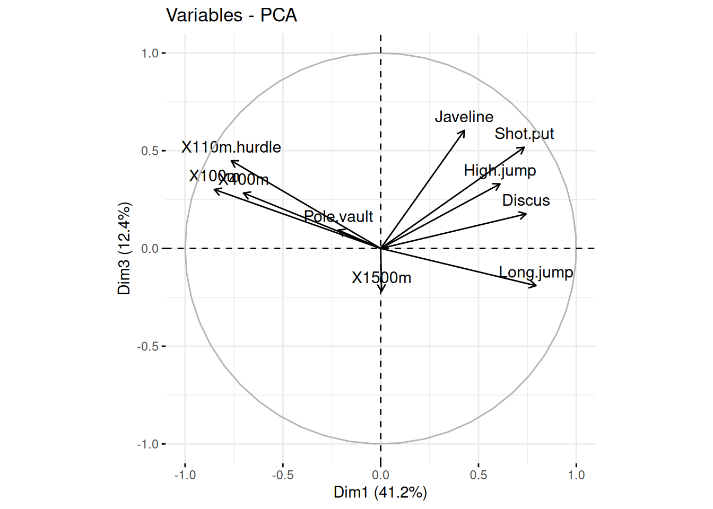

27 L’analyse de données (ACP, ACM, ACF…)
27.1 Tâches concernées et recommandations
Vous souhaitez appliquer les méthodes classiques d’analyse de données, notamment l’analyse en composantes principales, l’analyse des correspondances multiples, l’analyse factorielle des correspondances…
-
Il est recommandé d’utiliser le package
FactoMineRqui permet d’appliquer toutes les méthodes de façon simple et efficace, et dont la documentation existe en français. -
Il est également recommandé d’utiliser le package
factoextraqui propose des fonctions utiles pour analyser les résultats.
27.2 Présentation des packages FactoMineR et factoextra
Le package FactoMineR (attention à la casse !) permet d’utiliser facilement les méthodes d’analyse de données classiques, notamment l’ACP, l’ACM, l’AFC, la CAH… Par chance, il existe de multiples ressources en français sur ce package car il a été développé par des chercheurs français (voir paragraphe Ressources).
Le package factoextra permet par ailleurs d’extraire, de manipuler et de visualiser les résultats des méthodes d’analyse de données. Deux points sont à noter :
-
factoextrafonctionne également avec les autres packages d’analyse de données (stats,ade4,ExPosition) ; -
factoextraproduit des graphiques construits avec le packageggplot2, qui peuvent donc être facilement personnalisés (titre, couleurs…) et exportés.
Cette fiche présente rapidement comment utiliser ces deux packages pour réaliser une analyse en composantes principales. Les fonctions de ces packages qui appliquent les autres méthodes ont une grammaire similaire, et sont présentées en détail (et en français !) dans la documentation.
27.3 L’ACP avec FactoMineR et factoextra
27.3.1 Etape 1 : réaliser l’ACP
Rappel rapide sur l’analyse en composantes principales : l’ACP est une méthode statistique qui permet d’explorer un jeu de données contenant des individus décrits par plusieurs variables quantitatives, pour lesquelles il est très difficile de visualiser les données dans un “hyper-espace” multidimensionnel. L’ACP est utilisée pour résumer le plus d’informations possibles en un nombre limité de nouvelles variables appelées composantes principales (deux ou trois). Ces composantes principales sont une combinaison linéaire des variables de départ, et peuvent être utilisées pour construire des représentations graphiques des donnes, en perdant le moins possible d’information.
Loading required package: ggplot2Welcome! Want to learn more? See two factoextra-related books at https://goo.gl/ve3WBaL’analyse en composantes principales est réalisée avec la commande PCA() de FactoMineR. Cette fonction produit une liste qui contient tous les résultats de l’ACP (valeurs propres, coordonnées…). On peut analyser la structure de cette liste avec la fonction str().
PCA(df, scale.unit = TRUE, ncp = 5, graph = TRUE)Les arguments de la fonction PCA() sont les suivants :
-
df: jeu de données de type data frame. Les lignes sont des individus et les colonnes sont des variables numériques ; -
scale.unit: une valeur logique. SiTRUE, les données sont standardisées/normalisées avant l’analyse ; -
ncp: nombre de dimensions conservées dans les résultats finaux ; -
graph: une valeur logique. SiTRUE, deux graphiques sont affichés : la projection des individus dans l’espace des individus, et la projection des variables dans l’espace des variables.
On va illustrer l’utilisation de ACP() avec le jeu de données decathlon2 du package factoextra, qui donne les performances d’un ensemble d’athlètes aux dix épreuves du décathlon.
X100m Long.jump Shot.put High.jump X400m X110m.hurdle Discus
SEBRLE 11.04 7.58 14.83 2.07 49.81 14.69 43.75
CLAY 10.76 7.40 14.26 1.86 49.37 14.05 50.72
BERNARD 11.02 7.23 14.25 1.92 48.93 14.99 40.87
YURKOV 11.34 7.09 15.19 2.10 50.42 15.31 46.26
ZSIVOCZKY 11.13 7.30 13.48 2.01 48.62 14.17 45.67
McMULLEN 10.83 7.31 13.76 2.13 49.91 14.38 44.41
Pole.vault Javeline X1500m Rank Points Competition
SEBRLE 5.02 63.19 291.7 1 8217 Decastar
CLAY 4.92 60.15 301.5 2 8122 Decastar
BERNARD 5.32 62.77 280.1 4 8067 Decastar
YURKOV 4.72 63.44 276.4 5 8036 Decastar
ZSIVOCZKY 4.42 55.37 268.0 7 8004 Decastar
McMULLEN 4.42 56.37 285.1 8 7995 DecastarOn stocke dans resultats_acp les résultats de l’ACP. Il s’agit d’une liste, dont la structure peut être affichée avec la fonction str(resultats_acp).
resultats_acp <- PCA(decathlon2_quant, scale.unit = TRUE, ncp = 5, graph = FALSE)
27.3.2 Etape 2 : Exploiter les résultats de l’ACP avec factoextra
Les fonctions suivantes du package factoextra seront utilisées :
-
get_eigenvalue(): extraire les valeurs propres ; -
fviz_eig(): visualiser les valeurs propres ; -
get_pca_ind(),get_pca_var(): extraire les résultats pour les individus et les variables, respectivement ; -
fviz_pca_ind(),fviz_pca_var(): visualiser les résultats des individus et des variables, respectivement ; -
fviz_pca_biplot(): créer un biplot des individus et des variables.
27.3.2.1 Analyse des valeurs propres
La fonction get_eigenvalue() extrait les valeurs propres de l’ACP, et la fonction fviz_eig() les représente graphiquement. Ces deux fonctions permettent de choisir rapidement le nombre de composantes principales que l’on souhaite retenir.
eig.val <- get_eigenvalue(resultats_acp)
eig.val eigenvalue variance.percent cumulative.variance.percent
Dim.1 4.1242133 41.242133 41.24213
Dim.2 1.8385309 18.385309 59.62744
Dim.3 1.2391403 12.391403 72.01885
Dim.4 0.8194402 8.194402 80.21325
Dim.5 0.7015528 7.015528 87.22878
Dim.6 0.4228828 4.228828 91.45760
Dim.7 0.3025817 3.025817 94.48342
Dim.8 0.2744700 2.744700 97.22812
Dim.9 0.1552169 1.552169 98.78029
Dim.10 0.1219710 1.219710 100.00000fviz_eig(resultats_acp, addlabels = TRUE)27.3.2.2 Analyse de la projection des variables
La fonction get_pca_var() permet de récupérer des informations sur les variables :
-
var$coord: coordonnées des variables pour créer un nuage de points. -
var$cos2: cosinus carré des coordonnées des variables. Cette variable mesure la qualité de représentation des variables sur le graphique de l’ACP (c’est-à-dire dans quelle mesure la variance de chaque variable se décompose selon les différentes composantes principales) ; -
var$contrib: contient les contributions (en pourcentage) des variables aux composantes principales.
var <- get_pca_var(resultats_acp)
varPrincipal Component Analysis Results for variables
===================================================
Name Description
1 "$coord" "Coordinates for the variables"
2 "$cor" "Correlations between variables and dimensions"
3 "$cos2" "Cos2 for the variables"
4 "$contrib" "contributions of the variables" On peut représenter facilement les variables sur le cercle de corrélation avec la fonction fviz_pca_var(). Par défaut cette fonction représente les deux premières dimensions, mais on peut choisir d’autres dimensions en précisant axes = c(i, j).
fviz_pca_var(resultats_acp)fviz_pca_var(resultats_acp, axes = c(1, 3))
On peut représenter facilement la qualité de représentation des variables avec le package corrplot (somme en ligne sur toutes les dimensions = 1) :
corrplot 0.95 loadedOn peut également représenter facilement la contribution des variables aux composantes principales (somme en colonne sur toutes les variables = 100) :
corrplot(var$contrib, is.corr = FALSE)La fonction fviz_contrib() permet de faire un graphique des contributions à une composante principale :
fviz_contrib(resultats_acp, choice = "var", axes = 1)27.3.2.3 Analyse de la projection des individus
La fonction get_pca_ind() permet de récupérer des informations sur les individus : les coordonnées, la qualité de représentation et les contributions.
ind <- get_pca_ind(resultats_acp)
indPrincipal Component Analysis Results for individuals
===================================================
Name Description
1 "$coord" "Coordinates for the individuals"
2 "$cos2" "Cos2 for the individuals"
3 "$contrib" "contributions of the individuals"On peut représenter facilement les individus sur le graphique des composantes principales avec la fonction fviz_pca_ind(). Par défaut cette fonction représente les deux premières dimensions, mais on peut choisir d’autres dimensions en précisant axes = c(i, j).
fviz_pca_ind(resultats_acp)fviz_pca_ind(resultats_acp, col.ind = "cos2",
gradient.cols = c("#00AFBB", "#E7B800", "#FC4E07"),
repel = TRUE # Évite le chevauchement de texte
)La fonction fviz_contrib() permet de faire un graphique des contributions des individus à une composante principale :
fviz_contrib(resultats_acp, choice = "ind", axes = 1)Enfin, la fonction fviz_pca_biplot() permet de réaliser un graphique représentant ensemble les variables et les individus. Dans ce graphique, un individu qui se trouve du même côté d’une variable donnée a une valeur élevée pour cette variable (et inversement).
fviz_pca_biplot(resultats_acp, repel = TRUE,
col.var = "blue", # Couleur des variables
col.ind = "red" # Couleur des individues
)27.4 Pour en savoir plus
On trouve sur internet beaucoup de ressources sur le package FactoMineR :
- le site officiel du package
FactoMineR(entièrement en français) ; - un cours complet d’analyse de données avec
FactoMineR(entièrement en français) ; - les tutoriels de
FactoMineR(entièrement en français) ; - Les auteurs de
FactoMineRont écrit un livre sur les méthodes d’analyse de données (en anglais), avec des exemples utilisant le package. -
Une introduction à l’utilisation de
factoextrapour visualiser les résultats (en anglais) ; - Les auteurs de
FactoMineRont également développé un plugin pour faciliter l’utilisation du package.